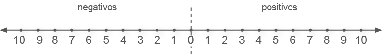
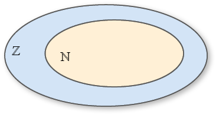
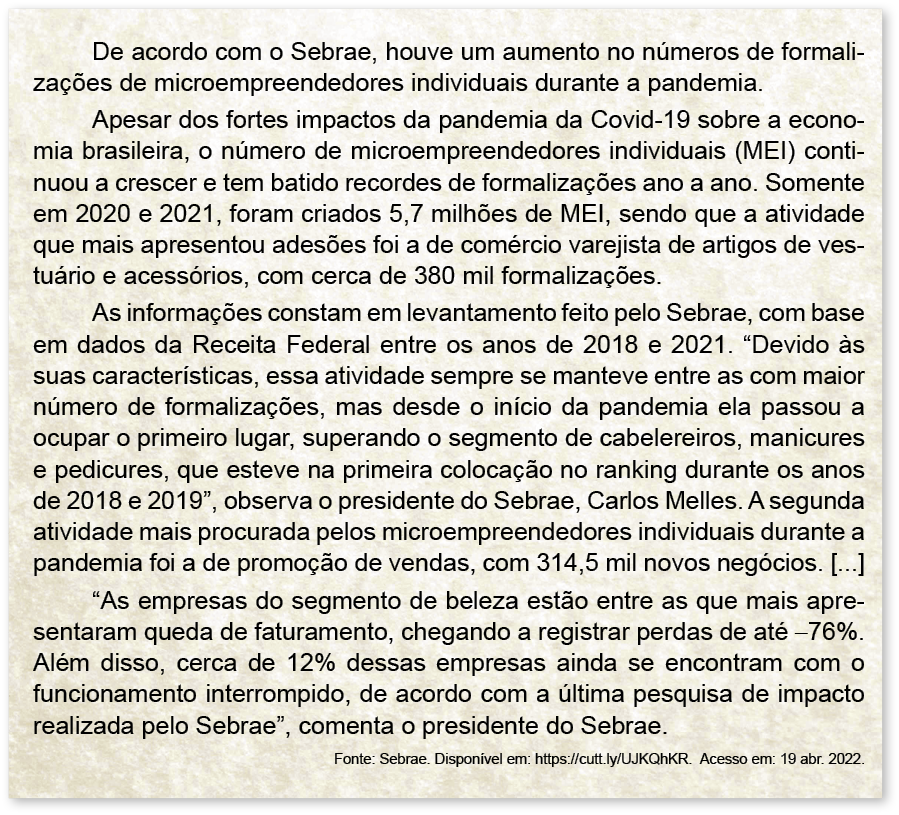
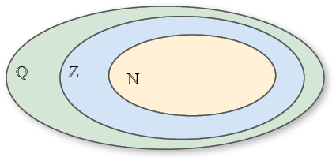
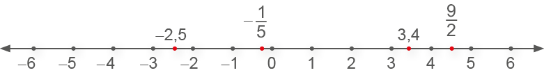
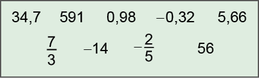

CAPÍTULO 1 - Ampliando o estudo sobre os números naturais, inteiros e racionais
Conjuntos dos números naturais, inteiros e racionais
Observe os ingredientes necessários para fazer uma torta de maçã.
Ingredientes:
- ► 2 maçãs grandes
- ► 1 xícara (chá) de açúcar
- ► 2 colheres (chá) de canela em pó
- ► 2 colheres (sopa) de margarina derretida
- ► 1 ovo inteiro
- ► 1
1 2 - ► 1 colher (chá) de fermento em pó
- ► Margarina para untar e farinha de trigo para polvilhar a fôrma
A quantidade utilizada de cada ingrediente é representada por números racionais.

- Troque ideias com um colega e escrevam, no caderno, os números que aparecem na receita e representam números naturais, inteiros e racionais.
- O número misto 1
1 2
13
Vamos relembrar os conjuntos numéricos aos quais pertencem os números que aparecerem na receita.
Conjunto dos números naturais (N)
Conheça os prédios mais altos no critério de altura arquitetônica, que leva em conta o projeto original e desconsidera antenas adicionadas posteriormente.
![Gráfico de barras verticais com o título “Os 10 edifícios mais altos do mundo”. Eixo horizontal nomeado “Edifícios” com os 10 edifícios identificados por cores. Eixo vertical esquerdo nomeado “Altura (m)”, de baixo para cima, variando de 0 a 900 metros. O gráfico exibe dez barras verticais. A barra 828, em azul marinho, corresponde a Burj Khalifa (Dubai - Emirados Árabes Unidos). A barra 632, em verde, Shanghai Tower (Xangai - China). A barra 601, em laranja, Makkah Clock Tower (Meca - Arábia Saudita). A barra 599, em amarelo, Ping An Finance Centre (Shenzhen - China). A barra 554,5, em azul claro, Lotte World Tower (Seul - Coreia do Sul). A barra 541,3, em marrom, One World Trade Center (Nova Iorque - Estados Unidos). A barra 530, em roxo, Guangzhou CTF Finance Centre (Cantão - China). A barra 530, em rosa, Tianjin CTF Finance Centre (Tianjin - China). A barra 528, em verde escuro, China Zun (Pequim - China). A barra 508, em verde limão, Taipei 101 (Taipei -Taiwan). Fonte: Casa vogue. Disponível em: https://casavogue.globo.com/Arquitetura/Edificios/noticia/2019/10/conheca-os-10-predios-mais-altos-do-mundo.html. Acesso em: 19 abr. 2022.](../../resources/images/8ANO_U1_image/Grafico_Uni1_edificios.png)
Fonte:Casa vogue. Disponível em: https://casavogue.globo.com/Arquitetura/Edificios/noticia/2019/10/conheca-os-10-predios-mais-altos-do-mundo.html. Acesso em: 19 abr. 2022.
Para indicar a altura dos edifícios e a posição ocupada no ranking mundial por cada um deles, foram usados os números naturais.
Representamos o conjunto dos números naturais por:
ℕ = {0, 1, 2, 3, 4, 5, 6, 7, ...}
Todo número natural possui um sucessor que pode ser obtido adicionando-se 1. E todo número natural possui um antecessor, com exceção do zero, que pode ser encontrado subtraindo-se 1.
Podemos representar os números naturais em uma reta numérica, observe:
Para cada número, associamos um ponto na reta numérica, lembrando que a distância entre dois pontos consecutivos deve ser sempre a mesma.
14
Conjunto dos números inteiros (ℤ)
Nas imagens a seguir, podemos observar duas cidades e suas temperaturas registradas em um dia do mês de janeiro. Enquanto no Rio de Janeiro há uma temperatura de 38ºC, em Kiev, capital da Ucrânia, pode-se ter temperaturas negativas.
Para indicar as temperaturas nessas cidades, foram usados números inteiros.
Representamos o conjunto, ao qual esses números pertencem, por:
ℤ = {..., -3, -2, -1, 0, 1, 2, 3, ...}
Assim como os naturais, os números inteiros também possuem um sucessor e antecessor que podem ser representados em uma reta numérica, observe:

Observando a reta numérica, podemos citar alguns exemplos de números que são opostos ou simétricos e também os seus sucessores e antecessores, veja:
|
|
|
|
|
|
15
Lembre-se que ℕ ⊂ ℤ.
Conjunto dos números racionais (ℚ)

As informações numéricas que aparecem no texto pertencem ao conjunto dos números racionais.
Representamos o conjunto dos números racionais por:
ℚ = { , a ∈ ℤ, b ∈ ℤ e b ≠ 0}
Lembre-se de que todo número inteiro é um número racional.
 ℕ ⊂ ℤ ⊂ ℚ.
16
Os números racionais também podem ser representados na reta numérica. Observe a representação de alguns números.
|
|
|
|

As frações podem ser transformadas em números decimais. Para isso, basta dividirmos o numerador pelo denominador.
Quando fazemos essa divisão, o resultado encontrado pode ser um número decimal exato ou uma dízima periódica.
|
decimais exatos |
|
dízimas periódicas |
|||
|
|
A dízima periódica apresenta um ou mais algarismos que se repete infinitamente representando o período do número.
Quando a parte decimal é composta apenas pelo período, a dízima é classificada como dízima periódica simples. Já quando além do período existir, na parte decimal, algarismos que não se repetem, será uma dízima periódica composta.
A fração que dá origem à dízima periódica é chamada de fração geratriz.
Fração geratriz
Vamos verificar como podemos encontrar a fração geratriz que deu origem a uma dízima periódica.
Situação 1
17
Vamos escrever uma equação considerando a dízima periódica igual a x.
|
x |
= |
0,555... |
||
|
|
10 · x |
= |
10 · 0,555... |
Como o período da dízima é 5, multiplicamos ambos os membros da igualdade por 10. |
|
10x |
= |
5,555... |
||
|
- |
x |
= |
0,555... |
Subtraímos a equação original da equação encontrada. |
|
9x |
= |
5 |
||
|
x = |
||||
Portanto, a fração geratriz da dízima periódica 0,555... é . Se dividirmos 5 por 9 iremos obter 0,555...
Situação 2
Vamos escrever uma equação considerando a dízima periódica igual a x.
|
x |
= |
1,32121... |
Multiplicamos por 10 ambos os membros da igualdade, pois o 3 não faz parte da dízima, devemos multiplicar a equação por 10 para que fique apenas a dízima. |
||
|
(I) |
10 x |
= |
13,2121... |
||
|
(II) |
100 · 10x |
= |
100 · 13,2121... |
Como o período da dízima é 21, multiplicamos ambos os membros da igualdade por 100. |
|
|
1 000x |
= |
1 321,21... |
|||
|
1 000x |
= |
1 321,21... |
Subtraímos I de II para eliminar a parte decimal. |
||
|
- |
10x |
= |
13,21... |
||
|
990x |
= |
1 308 |
Portanto, a fração geratriz da dízima periódica 1,32121... é
18
►Encontre soluções
- No quadro a seguir, identifique e escreva, em seu caderno, os números que pertencem a cada um dos conjuntos: números naturais, inteiros e racionais.

- Em seu caderno, represente na reta numérica, os números - 4; 0,5; ; 3 e -2,3.
- A tabela abaixo mostra a idade de quatro atletas de uma equipe de basquete, faltando apenas a idade do 5.º jogador.
|
22 |
23 |
22 |
25 |
? |
A média de idade dessa equipe é de 23 anos. Qual é a idade do 5.º jogador?
- Escreva na forma decimal.
- Determine a fração geratriz das dízimas periódicas a seguir:
- 0,777...
- 1,4333...
- 0,2626...
- 0,444...
- 0,111...
- -0,222...
- 0,333...
- 0,090909...
- Calcule:
a) b)
7.(OBMEP) O pé de Maurício tem 26 cm de comprimento. Para saber o número de seu sapato, ele multiplicou essa medida por 5, somou 28 e dividiu tudo por 4, arredondando o resultado para cima. Qual é o número do sapato de Maurício?
- 38
- 40
- 42
- 39
- 42
8. (OBMEP, 2006) A figura representa parte de uma régua graduada de meio em meio centímetro, onde estão marcados alguns pontos. Qual deles melhor representa o número 2x + 1?
- R
- S
- T
- U
- V